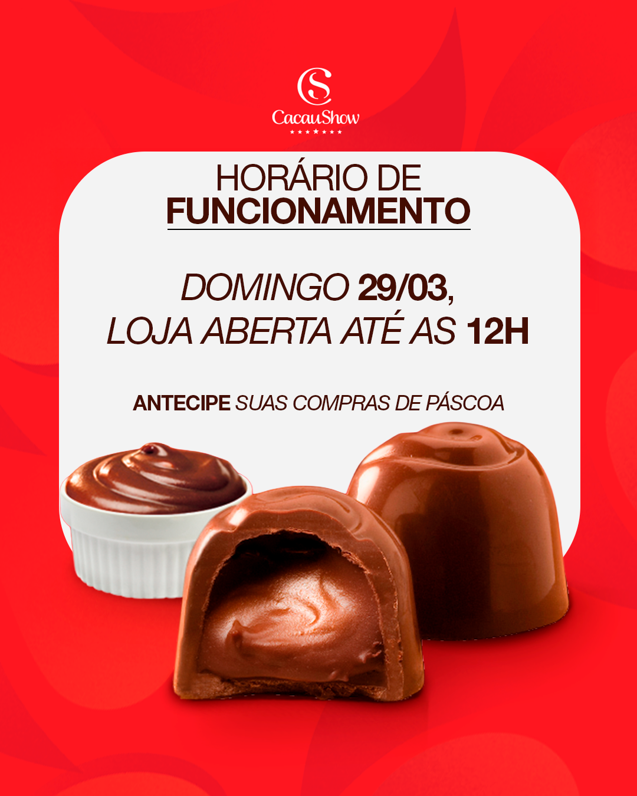
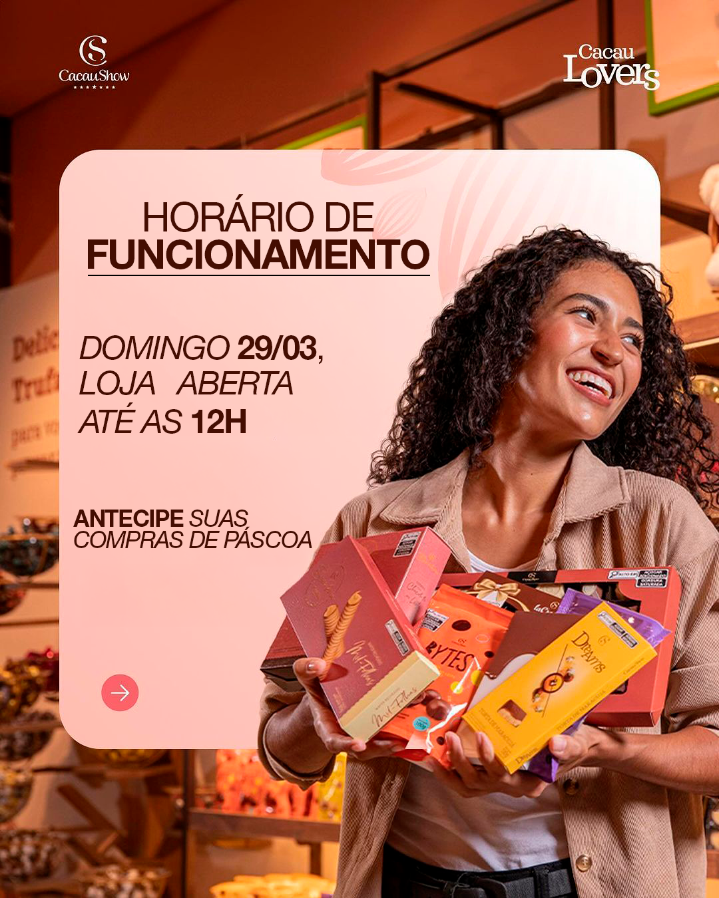

Cacau Show
Cambará
Criativos de Páscoa 2026 para a franquia de Cambará, comunicando horários e campanha sazonal com o padrão visual da marca.



Comunicação sazonal com padrão de marca.
Peças desenvolvidas para o período de Páscoa, adaptando a identidade da franquia à comunicação local com clareza e apetite visual.